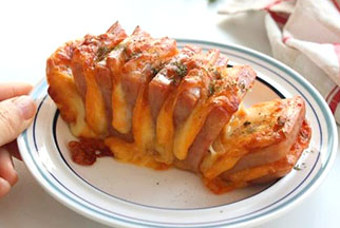
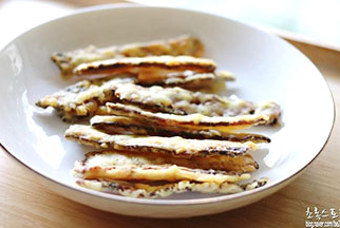
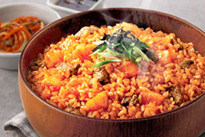
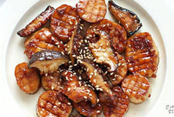
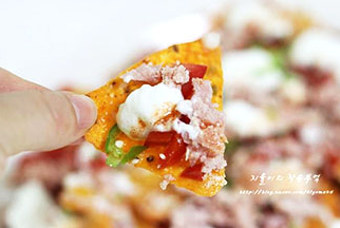
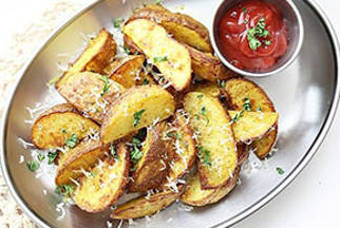
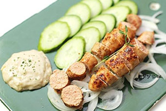

-

레시피
스팸 아코디언 간단하고 맛있는 맥주 안주
명절이 되면 항상 스팸 선물세트가 들어온답니다. 일 년에 두 번 선물 들어오니~ 따로 사 먹을 필요 없어서 좋더라고요. ^^ 스팸을 보더니 노릇하게 구워진 구이가 먹고 싶다는 녀석을 위해서 아침 반찬으로 스팸 아코디언을 만들어 주었더니 요거랑 밥 한 공기 뚝딱했답니다. 재료 스팸 통조림 1개 슬라이스 치즈 2장 모짜렐라 약간 파슬리가루 1. 재료 준비 스팸
4개월 전 제시 -

레시피
쥐포튀김 집에서 간단한 술안주 레시피 혼술안주
쥐포튀김 집에서 간단한 술안주 레시피 혼술안주 집에서 간단한 술안주로 만들어 즐길 수 있는 레시피, 쥐포튀김을 만들었어요. 술안주로도 좋지만 순삭 간식으로도 입이 심심할 때 집에 쥐포가 있다면 쥐포를 더 맛있게 먹을 수 있는 방법이기도 한데요, 바삭바삭한 튀김옷과 양념된 쥐포 맛이 참 잘 어울린답니다. 먹기 좋게 스틱 모양으로 잘라 튀기면 집어먹기도 좋죠
1개월 전 초록스토리 -

레시피
간편하게 먹을 수 있는 볶음밥 밀키트
볶음밥 밀키트 삼겹살을 먹을 때도, 닭갈비를 먹을 때도, 심지어 떡볶이를 먹을 때도 마무리는 ‘볶음밥’이다. 어떤 환경에서도 볶음밥은 기본적인 맛이 보장되는 요리라 할 수 있다. 밥과 함께 여러 재료를 기름에 볶아서 만드는 음식은 전 세계 곳곳에서 공통적으로 발견되며, 그만큼 종류도 다양하고 맛도 다채롭다. 지금부터는 갖가지 종류의 볶음밥을 간편하게 먹을
2일 전 데일리 -

레시피
새송이 버터구이 만들기 단짠 마늘간장소스 버섯요리 레시피
새송이 버터구이 만들기 단짠 마늘간장소스 버섯요리 레시피 새송이는 굽거나 전으로 많이 먹는데요. 요즘 가로로 썰어 버터로 굽는 버터구이도 많이 보이더라고요~ 버터로 구워 고소함을 더하고, 마늘간장소스로 중독성 있는 감칠맛을 더한 새송이 버섯 버터구이 만들기를 소개합니다! 요리시간: 30분 난이도: 하 재료 1~2인분 기준 새송이버섯 3개 버터 20g
1개월 전 은야쟁이 -

레시피
백종원 도리토스 나초 도리로코스 간단 맥주안주로 굿굿 ~!!
얼마전 인스타를 하다가 소유진씨가 올리신 도리토스 나쵸를 봤지요 :) 한번 꼭 해봐야지 했는데 벌써 핫하게 뜨고 있더라구욤 간단하기도 하고 간단 맥주안주로 즐기기 너무 좋아요 술 못하는 저는 이렇게만 먹어도 그맛에 반해서 또 생각이 나더라구요 ㅋ 콘칩으로도 하던데 저는 나쵸로 먼저 해봤어요 ^^ 요아이가 바로 도리로코스 인데요 :) 나쵸에 방울토마토 그리고
1개월 전 지율이
-
레시피
치즈 베이컨 감자채전 만들기 집에서 간단한 술안주
술안주 급히 만들어야 할때, 만만한 게 전 요리죠~ 오랜만에 베이컨 감자채전 만들기 했어요. 남편이 맥주 안주로 먹을 거 없냐고 하길래, 냉장고를 뒤져보니 내 주먹만 한 감자와 베이컨이 있는 거예요. 얇게 채 썰어 바삭하게 구워봤습니다. 피자치즈도 보여 함께 섞어서 구웠더니 고소한 바삭함이 업 되는?? 치즈 감자채전 빠르게 만들어 볼게요 :) 재료 감자 1
2주일 전 스리마미 -

레시피
에어프라이어 웨지감자 만들기. 카레가루 솔솔 감자요리 감자간식이지요.
에어프라이어 웨지감자 만들기. 카레가루 솔솔 감자요리 감자간식이지요. 오늘은 오랜만에 #웨지감자 가 생각이 났다. 고소하고 포슬포슬한 웨지감자를 케첩에 콕콕 찍어 먹으면 좋겠다! 싶어서 냉장고에서 감자를 찾아보니 작은 감자 3개가 딱! 남아있더라 ㅎㅎ 작은 사이즈라 좀 적다 싶었지만 그래도 감자가 남아있는 게 어디냐며 얼른 #에어프라이어 에 #감자요리 를
1개월 전 달꿈 -

레시피
버터 명란젓 구이 버터명란구이 소스와 함께 혼술 안주 추천
#버터명란젓구이 #명란젓 #명란젓구이 #버터명란구이 #버터명란구이소스 #명란구이소스 #혼술안주 #혼술안주추천 #안주 #안주추천 요즘 명란젓에 빠져서 그런가 이것저것 해먹게 되네요 ㅎㅎ 오늘은 혼술 안주로 딱 좋은 버터 명란젓 구이를 만들어봤어요. 요거 만들어보신 분들은 알겠지만, 소스 만들어서 같이 곁들여서 먹음 최고죠~ 명란은 다양한 요리에 넣어서 활용이
1개월 전 달달한네뜨 -
레시피
스팸 아코디언 간단하고 맛있는 맥주 안주
명절이 되면 항상 스팸 선물세트가 들어온답니다. 일 년에 두 번 선물 들어오니~ 따로 사 먹을 필요 없어서 좋더라고요. ^^ 스팸을 보더니 노릇하게 구워진 구이가 먹고 싶다는 녀석을 위해서 아침 반찬으로 스팸 아코디언을 만들어 주었더니 요거랑 밥 한 공기 뚝딱했답니다. 재료 스팸 통조림 1개 슬라이스 치즈 2장 모짜렐라 약간 파슬리가루 1. 재료 준비 스팸
4개월 전 제시